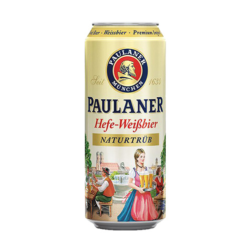
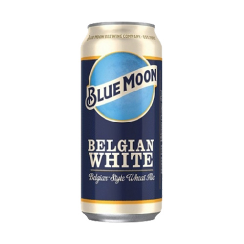
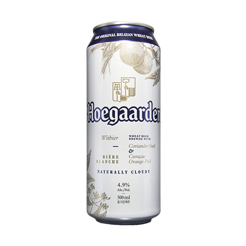
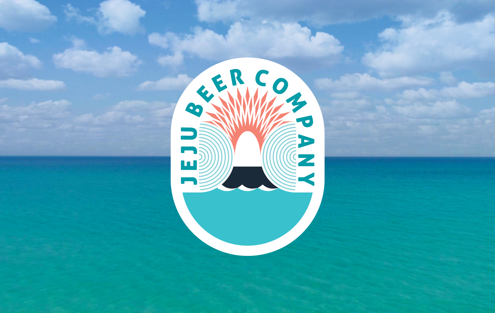
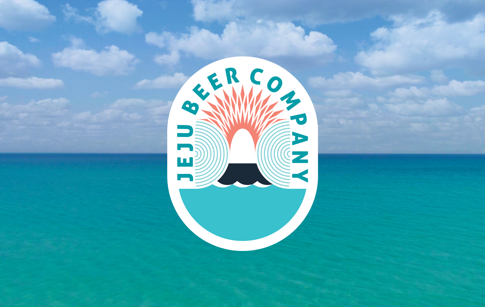
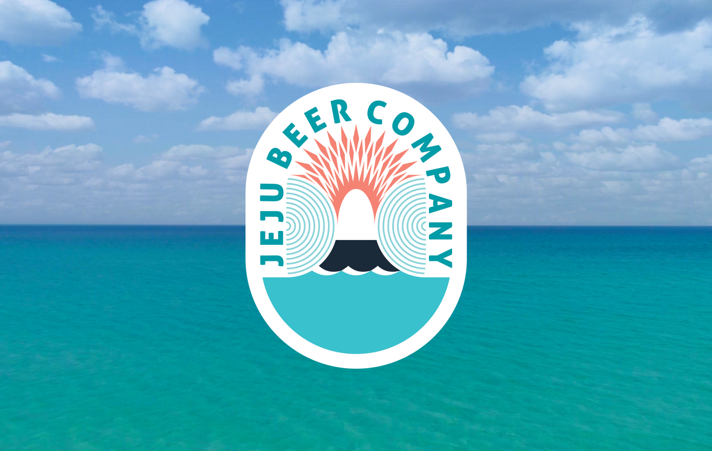

전생했더니 효모였던 건에 관하여
효모에서 나는 복잡미묘한 향을
사랑하시는 군요
때로는 열대과일과 같은 상큼한 향이
때로는 바나나나 건자두와 같은 달큰한 향이
나는 효모 기반의 맥주들
당신이 집을 수 있는 맥주는
세상에 너무 많습니다.
주변 편의점에서 일단 먹어봐요



추천 수제맥주 집
 

효모에서 나는 복잡미묘한 향을
사랑하시는 군요
때로는 열대과일과 같은 상큼한 향이
때로는 바나나나 건자두와 같은 달큰한 향이
나는 효모 기반의 맥주들
당신이 집을 수 있는 맥주는
세상에 너무 많습니다.
